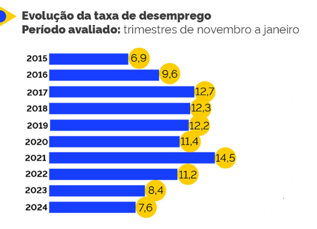

Desemprego
A taxa de desemprego do Brasil foi de 7,6% no trimestre encerrado em janeiro de 2024 (novembro, dezembro e janeiro). Estava com a mesma taxa no trimestre anterior (agosto, setembro e outubro)
Em números absolutos, a população desocupada do Brasil equivale a 8,3 milhões de pessoas. O número ficou estável em relação ao trimestre anterior e recuou 7,8% em comparação com o mesmo período do ano anterior. São 703 mil pessoas a menos que procuram emprego
Durante a pandemia da covid-19, a taxa de desemprego atingiu níveis alarmantes no Brasil. No primeiro trimestre de 2021, este índice atingiu 14,9%, ultrapassando a marca de 15,2 milhões de pessoas, segundo dados do IBGE
Principais Causas De Desemprego
-Crise nacional ou mundial
Crises políticas, sociais, sanitárias e econômicas, muitas vezes, relacionadas a um fator específico, como a pandemia mundial de Covid-19, desencadeiam uma série de consequências, como o aumento do desemprego no Brasil.

-Necessidade de corte de custos
Ainda no contexto do tópico anterior, entre as principais causas de desemprego, as crises econômicas geram um efeito bastante inconveniente no universo corporativo: necessidade de corte de custos. Aqui, nos referimos às crises que abrangem não apenas o país, mas a economia mundial.
-Crise em diversos segmentos
Uma crise sanitária, como a pandemia de Covid-19, exige medidas específicas que podem causar efeitos adversos. Por exemplo, o isolamento social freou o consumo em diversos segmentos do mercado, fazendo com que muitas indústrias acumulassem mercadorias paradas em seus estoques. O que, por consequência, afetou os preços e, naturalmente, mais uma crise.
-Falta de atualização ou qualificação do professional
Como dito acima, vivemos na era da transformação digital, isto é, tempos de acesso à informação, forte presença tecnológica, automação de tarefas, Inteligência Artificial e competitividade desenfreada. Em outras palavras, falta de atualização ou qualificação profissional está entre as principais causas de desemprego no Brasil e no mundo. Para contornar essa realidade e evitar o desemprego, é imprescindível manter os conhecimentos atualizados e acompanhar as tendências.